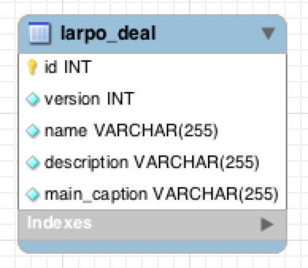

Build modern, sophisticated and robust Groovy web applications in record time!
Benjamin / @benjlacroix
Framework complet MVC
S'exécute sur une JVM
Développement rapide
Basé sur Groovy (dérivé de Java avec du sucre syntaxique)
Convention over Configuration
Code découpé & mutualisé
Test unitaires et fonctionnels
Communication base de données
A dynamic language for the Java platform
Exemple
def world = 'World'
def name = "Hello, ${world} !"
println name
> Hello, World!
Exemple 2
def words = ['Hello', 'Word', '!']
words.each {
print "${it} "
}
$ Hello World !
Modèle (Model)
Représentation de la base de données dans le code
En base de données | En Groovy
Une table <-> Une classe Groovy
synthaxe en snake_case <-> code en CamelCase
Une colonne <-> Une variable de classe
Clés étrangères <-> Mots clés
- hasMany
- hasOne
- belongsTo
Exemple de modèle
class LarpoDeal {
String name
String description
String mainCaption
}

Contrôleur (Controller)
Gère les requêtes des utilisateurs
Exemple de contrôleur
class DealController {
def list() {
List<Deal> deals = Deal.list()
deals.each { Deal d ->
d.price += 1 // Add 1 to each price
}
[deals: deals]
}
}
Ici, si l'utilisateur accède à l'URL : monsite.com/deal/list, alors il va déclencher la fonction list() du contrôlleur DealController. Cette fonction renvoie la liste des deals dans la variable deals pour qu'elle puisse être affiché dans la vue.
Vue (View)
Génération de la page HTML renvoyée à l'utilisateur
Exemple de vue
<div class="container">
<table class="table table-striped">
<thead>
<tr>
<th class="uppercase">caption</th>
<th class="uppercase">name</th>
</tr>
</thead>
<tbody>
<g:each in="${deals}" var="d">
<tr>
<td><img class="col-caption" src="${d.caption}"/></td>
<td>${d.name}</td>
</tr>
</g:each>
</tbody>
</table>
</div>
Filtre (TagLib)
Transformer à la volée des données dans la vue
Exemple de filtre
import java.text.SimpleDateFormat
class FormatTagLib {
def dateFormat = { attrs, body ->
out << new SimpleDateFormat(attrs.format).format(attrs.value)
}
<g:format format="dd-mm-yyyy" value="${deal.dateCreated}"/>
Communication base de données
Groovy Object Relational Mapping (GORM)
Modéliser la base de données
Sauvegarder, modifier, supprimer et rechercher des objets
Recherche
// Récupérer tous les deals
def deals = Deal.list()
// Trie en fonction du nom
deals = Deal.list(sort:'name', order: 'asc')
Recherche dynamique
// Récupérer les deals qui s'appellent <motorbike>
def deals = Deal.findByName('motorbike')
// Récupère les deals qui contiennent <moto>
// et qui ont un prix supérieur à 100
deals = Deal.findByNameLikeAndPriceGreaterThan('moto%', 100)
Critère (Criteria)
Moyen avancé d'interroger la base de données
def c = Deal.createCriteria()
def deals = c.list {
like('name', 'moto%')
and {
between('price', 1000, 2000)
like('description', 'yamaha%')
}
maxResults(10)
order('name', 'desc')
}
Résumé des intéractions
Commandes utiles
// Lance le serveur d'application
$ grails run-app
// Met à jour la structure du projet
$ grails upgrade
// Nettoyage du projet
$ grails clean